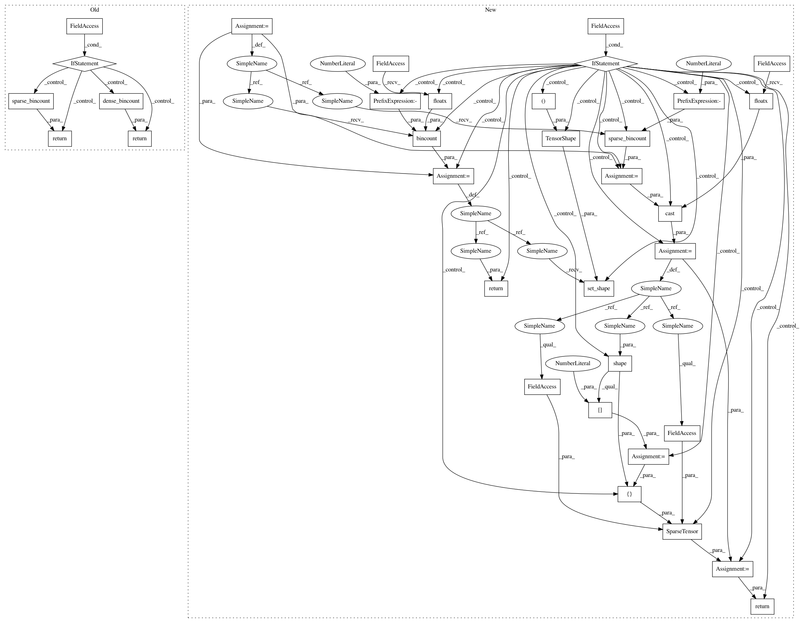

ff9c138639f6a0623b13ad4d75003ae024fa85ca,tensorflow/python/keras/layers/preprocessing/category_encoding.py,CategoryEncoding,call,#CategoryEncoding#Any#Any#,279
Before Change
control_flow_ops.Assert(
condition, ["Input values must be in the range 0 <= values < max_tokens"
" with max_tokens={}".format(out_depth)])
if self.sparse:
return sparse_bincount(inputs, out_depth, binary_output, count_weights)
else:
return dense_bincount(inputs, out_depth, binary_output, count_weights)
class _CategoryEncodingAccumulator(
collections.namedtuple("Accumulator", ["data", "per_doc_count_dict"])):
pass
After Change
control_flow_ops.Assert(
condition, ["Input values must be in the range 0 <= values < max_tokens"
" with max_tokens={}".format(out_depth)])
if self._sparse:
result = bincount_ops.sparse_bincount(
inputs,
weights=count_weights,
minlength=out_depth,
maxlength=out_depth,
axis=-1,
binary_output=binary_output)
result = math_ops.cast(result, K.floatx())
batch_size = array_ops.shape(result)[0]
result = sparse_tensor.SparseTensor(
indices=result.indices,
values=result.values,
dense_shape=[batch_size, out_depth])
return result
else:
result = bincount_ops.bincount(
inputs,
weights=count_weights,
minlength=out_depth,
maxlength=out_depth,
dtype=K.floatx(),
axis=-1,
binary_output=binary_output)
result.set_shape(tensor_shape.TensorShape((None, out_depth)))
return result
class _CategoryEncodingAccumulator(
collections.namedtuple("Accumulator", ["data", "per_doc_count_dict"])):
pass
In pattern: SUPERPATTERN
Frequency: 3
Non-data size: 34
Instances
Project Name: tensorflow/tensorflow
Commit Name: ff9c138639f6a0623b13ad4d75003ae024fa85ca
Time: 2020-11-18
Author: gardener@tensorflow.org
File Name: tensorflow/python/keras/layers/preprocessing/category_encoding.py
Class Name: CategoryEncoding
Method Name: call
Project Name: tensorflow/tensorflow
Commit Name: 8ee4ce6931a92fc0865d64a1c41b84a23d1ed351
Time: 2020-11-19
Author: fchollet@google.com
File Name: tensorflow/python/keras/layers/preprocessing/category_encoding.py
Class Name: CategoryEncoding
Method Name: call
Project Name: tensorflow/tensorflow
Commit Name: ff9c138639f6a0623b13ad4d75003ae024fa85ca
Time: 2020-11-18
Author: gardener@tensorflow.org
File Name: tensorflow/python/keras/layers/preprocessing/category_encoding.py
Class Name: CategoryEncoding
Method Name: call
Project Name: tensorflow/tensorflow
Commit Name: b46fa00aa4256914240cb154b910bebfaf1693d6
Time: 2020-11-18
Author: fchollet@google.com
File Name: tensorflow/python/keras/layers/preprocessing/category_encoding.py
Class Name: CategoryEncoding
Method Name: call